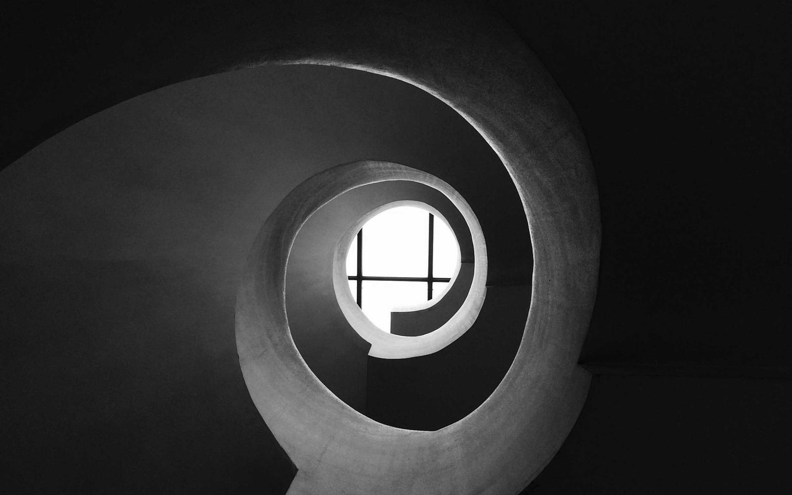
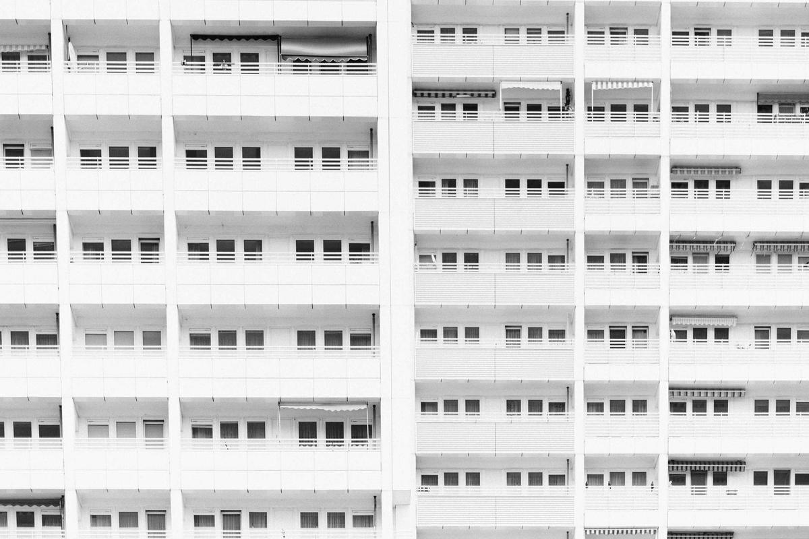

Volume on the right. Brightness on the left.
Sidewise claims the outer 8% of your Windows trackpad for instant volume and brightness sliders. Slide the glass to adjust your controls — no function keys, no menus, no drifting cursor.
Try it: drag the right edge up/down for volume · left edge for brightness
What it does
Right edge · Volume
Slide up or down to raise or lower audio. The OSD pill shows your level and fades away.
Left edge · Brightness
Slide the left border to step your display brightness without touching a key.
Media strip
Swipe left or right along the bottom of the trackpad to skip tracks. Tap to play or pause.
Quick mute
Double-tap the top-right corner to mute. Tap again to unmute. Instant, no fingers leaving the pad.
Tap top-right corner to unmute master audio endpoint
Cursor freeze
While you are sliding an edge, the mouse cursor stays locked in place so your pointer doesn't drift.
Cursor coordinates frozen in Windows Core Input
No dependencies
One .exe under 3 MB. No .NET runtime, no Visual C++, no Electron. Just run it.
Three steps
First, download it.
Run the installer or unzip the portable archive. The app appears in your system tray. No reboot, no admin prompt after setup.
Then slide an edge.
Slowly drag one finger along the outer 8% of your trackpad up or down. You will feel it respond immediately.
The rest follows.
Volume changes, brightness adjusts, the OSD pill appears and fades. Tweak edge width and sensitivity in the tray flyout.
Questions
Does this work on my laptop?
Will it break my normal trackpad gestures?
Does it run in the background?
Can I require a key press before it activates?
What if I don't have a Precision Touchpad?
Is it free?
Download and run.
The installer adds a Start Menu shortcut and a login entry. The portable version runs from wherever you unzip it.
Windows 10 · 1903+ · Precision Touchpad required

